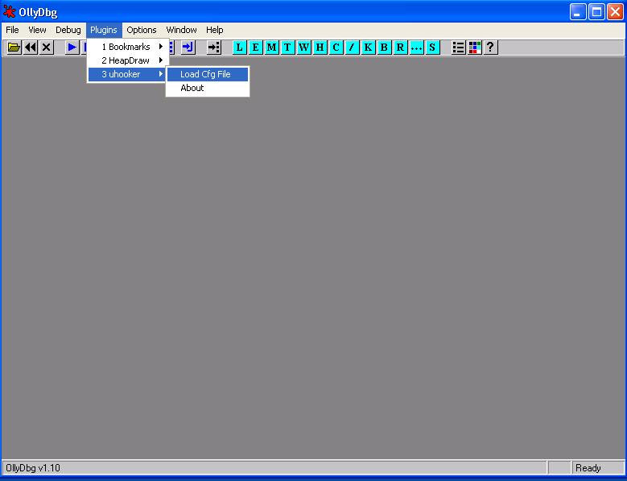

How does it work?
I have written several versions of the Universal Hooker, using different techniques to hook functions such as implementing my own 'debugger', modifying prologue of functions, etc. The version available at this web page is implemented as an OllyDbg plugin, so the hooking of functions is taken care by the OllyDbg Debugger (using software breakpoints).The basic components of the Universal Hooker are:
A configuration file is loaded from Ollydbg that defines what functions/addresses to hook, after parsing the configuration
file the uhooker core connects to the server and sends the hook information. Every time a function hook is triggered,
the uhooker core communicates with the server sending information about the function/address hooked, and the server
executes the corresponding hook handler as defined in the configuration files.
There are 3 different types of hooks:
1. Hook Before Entering the function (type 'B')
To intercept functions exported from a DLL the syntax is:
name_of_dll:function_name:number_of_parametes:python_module.hook_handler_name:hook_type
for example, to hook 'CreateFileA' (which has 7 parameters) before it is executed with
a handler called 'CreateFileA_handler' implemented in the file mymodule.py:
kernel32.dll:CreateFileA:7:mymodule.CreateFileA_handler:B
As explained above, it is possible to hook any 'executable' address of a process
(which is basically the same as setting a breakpoint on an address):
field_not_used:address_to_hook_in_hex:field_not_used:python_module.hook_handler_name:hook_type
So, for example, to hook execution at 0x401000 handled by the hook handler called 'anybp'
implemented in the mymodule.py file:
dummy.dll:0x401000:0:mymodule.anybp:*
Next is a sample of how a configuration file look like:
The configuration file can be loaded from OllyDbg by going to the 'plugins->uhooker' menu, and selecting 'Load Cfg File'. See the
screenshot below.

A file dialog will be displayed from which a .cfg file (in fact any name can be used) can be loaded.
After parsing the configuration file, the uhooker core will try to set breakpoints on the functions/addresses indicated
in the configuration file, for that reason before loading the configuration file the process to intercept should be loaded
in the debugger or the debugger should be attached to the process.
def hook_name(hookcall):
The hookcall parameter is an object passed by the server to the hook handler that
contains useful information about the intercept function and process. For
example:
A hook handler can also read and write memory of the intercepted process, allocate
memory, etc. All these functions are available from the Proxy.py module, so all hook
handler also import and create and instance of the 'Proxy' object.
Next is a sample hook handler:
This handler:
This can be easily done using the uhooker; for example,
by hooking send(),sendto(), recvfrom(), recv(), etc.
One thing that I normally do and that people without
much technical knowledge finds very amusing and I myself
find very handy for certain ocassions, is that
for every packet the application is about to send,
my hook handler saves the packet to a file,
runs an hex editor and loads the file with the
packet, using the hex editor I can change the packet, observe it,
add more bytes, etc, then I save the modified packet, and
that is the packet that will be sent over the wire.
Here is a hook handler for sendto() that does what I just
described.
When the packet is bigger than the original packet, this script
allocates a new buffer and modifies (overwrites) the frame
of the called function so the length is now correct and the
ptr to the buffer points to the new data. In some ocassiones,
this overwriting of the frame causes the program to crash
or do weird things, I don't really know why yet (I
did not try to establish the reason yet :)), so one thing I
usually do is hook connect(), and make the program
connect to a different port number and IP addresses.
Then I have a "proxy_hooker" that is basically a "tcp proxy"
written in python, when a packet arrives to the proxy, it knows
where to forward it, and also, every time a packet arrives,
it calls a 'hook handler' in python, just like the universal hooker.
In this way, I only need to mess with the connect() function,
and I make all the changes to the packet with a hooker
handler in the "proxy hooker" using the hex editor thing
I mentioned above for example, outside the process.
This is the very simple proxy_hooker.
And here is the hooks.py sample hook that loads an hex editor to edit packets.
The configuration file
The configuration files is a regular text file where each line defines the
functions/addresses to intercept (All lines beginning with '#' are
treated as comments).
2. Hook After the function returns (type 'A')
3. Hook when executing reaches this address (type '*')
# B = hook before entering function
# A = hook AFTER function returns
# * = hook when an address is executed
kernel32.dll:CreateFileA:7:mymodule.CreateFileA_handler:B
dummy.dll:0x401000:0:mymodule.anybp:*

The Hooks Handlers
A hook handler is basically a python script that is called every time the intercepted
function/address is called. It has the following definition:
def CreateFileA_handler(hookcall):
myproxy = hookcall.proxy
print "bughandler running..."
print "esp = %X" % hookcall.regs['esp']
print "retaddr = %X" % hookcall.retaddr
print "arg0 = %X" % hookcall.params[0]
buffer = myproxy.readasciiz( hookcall.params[0] )
print buffer
hookcall.sendack()
return
Using the Universal Hooker
To use uhooker the steps that need to be done are:
Use cases
next are some examples of fun things to do using the universal hooker.
Intercepting network traffic
One of the most commont tasks when trying to find bugs or analyze
the network protocol used by an application is interception of the
information sent on the wire. This allows for fuzzing of the
protocol without the need to implement it, we only need to
change the packets generated by the application.
Scripts
regmonitor.cfg
regmonitor.py
stepin.cfg
stepin.py